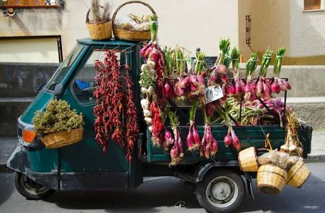

CityLoop Quest — Tropéa


Le rocher de Santa Maria dell’Isola n’est plus vraiment une île. Les dépôts de sable l’ont relié au rivage, mais le nom a survécu. La géographie change plus vite que les habitudes de langage.
La cathédrale conserve deux bombes de la Seconde Guerre mondiale qui seraient tombées sans exploser. Elles sont devenues des ex-voto, transformant des objets de destruction en signes de protection. Peu de sanctuaires possèdent une mémoire aussi littéralement explosive.
Les palais du centre cachent parfois des citernes et des conduits en terre cuite. Dans une ville perchée, l’eau était un trésor architectural. Un beau balcon impressionnait les voisins ; une réserve bien conçue permettait de survivre.
La fameuse cipolla rossa est douce, mais son nom géographique couvre une zone de production plus large que la seule commune de Tropéa. Le prestige de la ville a offert à l’oignon une marque irrésistible, et l’oignon a rendu la ville encore plus célèbre.
Enfin, les habitants utilisent souvent les places comme des personnes : on se retrouve « à Ercole », on descend « à l’Isola », on se donne rendez-vous « au Borgo ». Ces raccourcis montrent qu’un lieu devient vraiment vivant lorsqu’il entre dans la grammaire quotidienne.